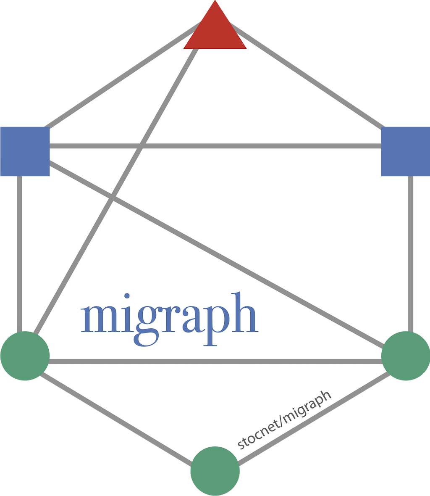
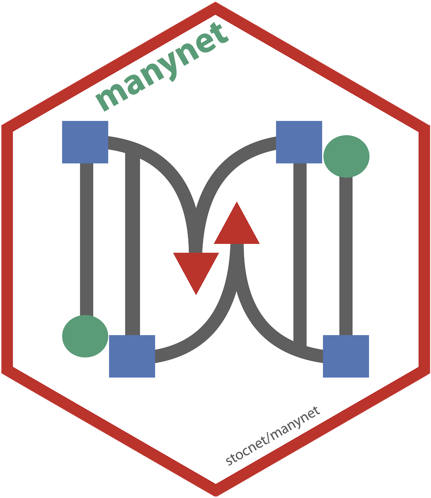
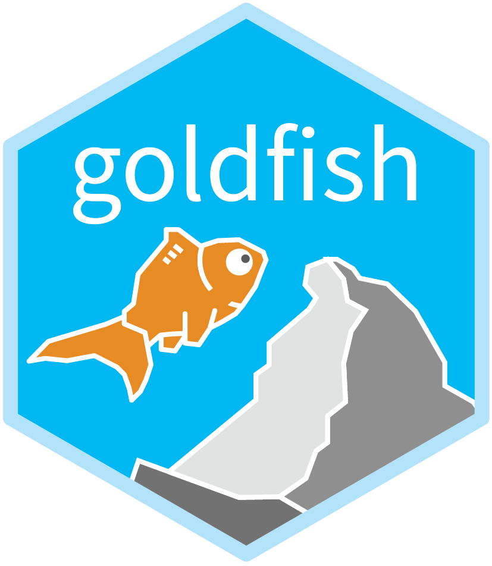
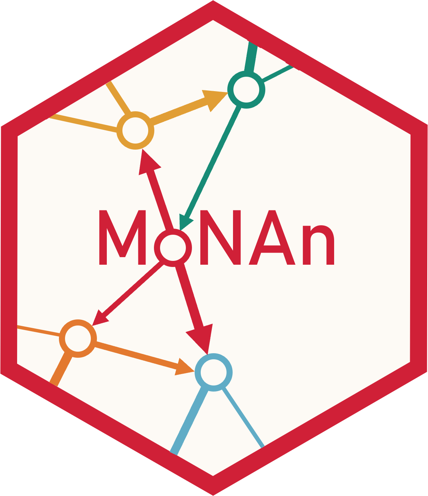
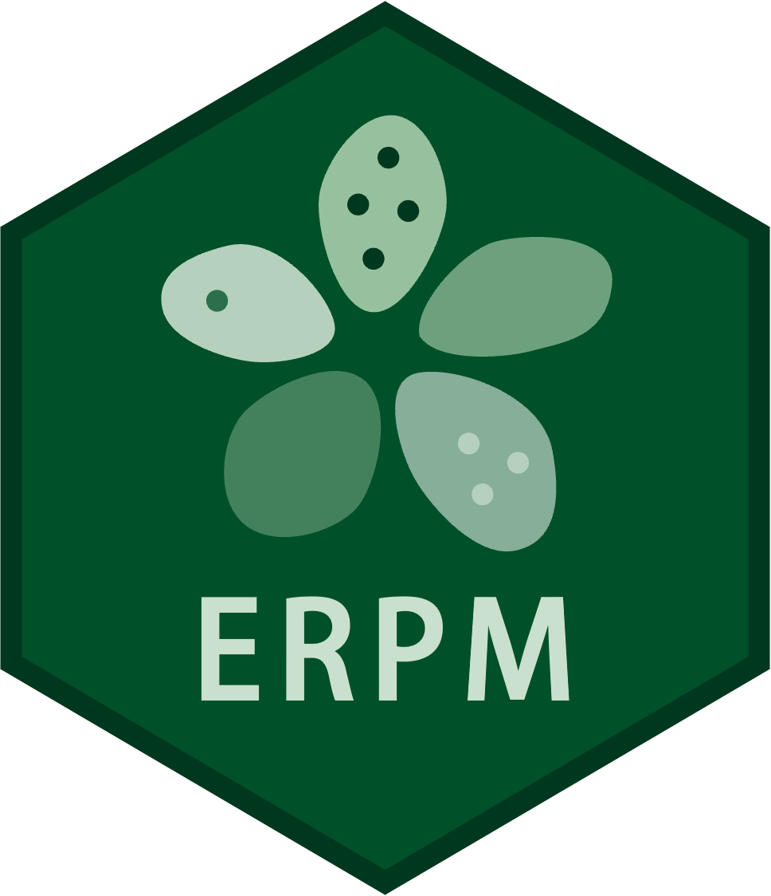

|
The RSiena package performs simulation-based estimation of Stochastic Actor-oriented Models (SAOMs) for longitudinal network data collected as panel data (repeated observations of social networks on the same node set - minor changes of the node set are allowed). Dependent variables can be single or multivariate networks, which can be directed, non-directed, or two-mode; these can be combined with actor variables, which then leads to a “networks and behavior” study. Website - Git - CRAN - User group |
|
 The migraph package builds on manynet to enable network analysis and modelling of multimodal, multilevel, and multilayer networks. It includes a range of measures that all work for one- and two-mode networks, their nodes and ties, algorithms for identifying motifs and community or equivalence memberships in them, and modelling one- and two-mode networks with multiple regression quadratic assignment procedure (MRQAP). |
|
 The manynet package provides many fundamental tools for working with many (if not most) types, formats, and classes of networks. These include functions for making networks (e.g. importing existing data, generating various random graphs), modifying networks (e.g. reformatting, transforming, splitting, and joining), to easy mapping for visualising graphs with sensible and flexible default individually, comparatively, and dynamically. |
|
 The goldfish package offers tools for applying statistical models to network/relational event data, time-stamped sequences of interactions or affiliations between actors or entities within a network. In addition to relational event models (REMs), the package includes rate, choice, and coordination processes for one- and two-mode dynamic network actor models (DyNAMs) and dynamic network actor models for interactions (DyNAMi). |
|
 The MoNAn package implements the method to analyse weighted mobility networks or distribution networks as outlined in: Block et al (2022). The purpose of the model is to analyse the structure of mobility, incorporating exogenous predictors pertaining to individuals and locations known from classical mobility analyses, as well as modelling emergent mobility patterns akin to structural patterns known from the statistical analysis of social networks. |
|
The autograph package offers ggplot2-based plotting methods for all of the above packages. The package also includes sensible defaults and consistent theming. |

|
 The ERPM package extends exponential random graph models (ERGMs) for partitions, i.e. sets of non-overlapping groups, such as face-to-face interactions, animal herds, political coalitions, etc. This model can be used to explain cross-sectional or longitudinal observed partitions through group formation processes based on individual attributes, relations between individuals, and size-related factors. |